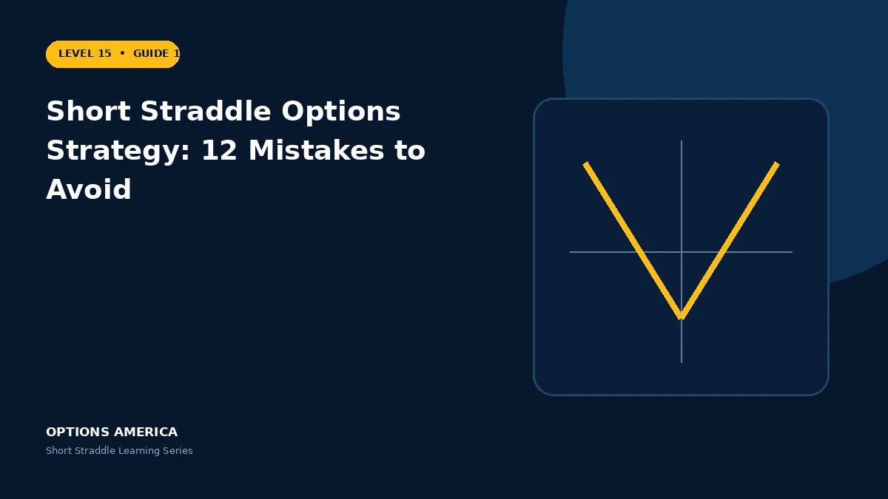

Avoid errors involving unlimited risk, IV, earnings, sizing, margin, adjustments, assignment and expiration.
Mistakes 1–3: risk
Do not call the trade safe because it begins delta-neutral, size from maximum profit or assume the breakevens cap loss. Tail risk remains open.
Mistakes 4–6: volatility
Do not sell only because IV is high, ignore event timing or assume volatility cannot rise further. Compare implied movement with scenario risk.
Mistakes 7–9: capital
Do not use all buying power, ignore correlation or rely on opening margin. A volatility shock can expand losses and requirements across positions.
Mistakes 10–12: management
Do not improvise rolls, hold for the last premium or ignore assignment and pin risk. Plan exit dates, loss limits and complete multi-leg orders.
A practical example
A trader sells several correlated straddles using most available margin. One market gap expands every position and the broker liquidates them into wide spreads.
This simplified scenario focuses on expiration outcomes; live prices and risks will differ. Live option prices also reflect the underlying price, time decay, rates, dividends, liquidity and transaction costs. Greeks are theoretical estimates, not guarantees.
Build a risk-first trading plan
Before using short straddle options strategy: 12 mistakes to avoid, record the underlying price, strike, expiration, total credit and contract multiplier. Calculate both expiration breakevens, then model losses beyond them rather than stopping at the profitable range. The maximum credit is visible at entry, but the largest future loss is not.
Stress at least five underlying prices, a volatility increase and decrease, and several dates. Include a gap that cannot be adjusted intraday. Review delta, gamma, theta and vega at the position and portfolio level because several neutral premium trades can become directional together.
Define a profit target, maximum tolerated loss, margin reserve, event rule and latest exit date. Use a single multi-leg order where possible and verify both legs after every fill or adjustment. This process does not eliminate risk, but it makes the decision measurable and repeatable.
After the trade, record actual movement, volatility change, slippage and the largest directional exposure. Comparing those results with the original forecast helps separate sound execution from a lucky outcome and improves future duration, strike and position-size decisions.
Frequently asked questions
What is the biggest risk?
Uncapped tail loss combined with leverage.
Does delta-neutral stay neutral?
No.
Why reserve buying power?
For stress, adjustments and orderly exits.
Continue the Short Straddle cluster
Explore related guides: Short Straddle Options Strategy Explained · Short Straddle vs Long Straddle · Short Straddle Greeks: Delta, Gamma, Theta and Vega. For a structured sequence, use the free Level 15 – Short Straddle course.
Options involve risk and are not suitable for every investor. This material is educational and is not investment, tax or legal advice. Greeks are theoretical estimates, and contract terms and broker requirements can vary.